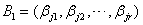

3.3 向量组的秩
一、向量组的极大线性无关组
| 前面我们介绍了一个向量由一组向量线性表出的概念，现在我们考虑两个向量组的线性表出关系。
显然向量组之间的线性表出关系具有传递性。
向量组的等价关系具有反身性，对称性，传递性。 即设R，S，T为三个同维向量组，则有 （1）反身性：R必与R自身等价 （2）对称性：若R与S等价，则S必与R等价； 若S与R等价，则R必与S等价。 （3）传递性：若R与S等价，S与T等价，则R与T必等价。 |
|
在向量组的线性表出关系上，有以下重要定理：
定理中（1）即为“若向量个数多的向量组可由个数少的向量组线性表出，则个数多的向量组必线性相关”。 由定理中（2）有以下推论： 推论：任意两个等价的线性无关向量组中所含向量个数必相等。 |
|
下面引入向量组的极大线性无关组的概念，先看一个例子。 例1：设向量组，显然有，所以 我们考察这个向量组的三个部分组：，易知R，S，T都是线性无关向量组，再以部分组R为例，若从原向量组中任取一个向量放进R中必线性相关，具有这种特性的部分组R，称为原向量组 |
与定义3.3中条件（2）等价的说法是：“T中任一个向量都可以用部分组 |
|
由例1说明，向量组的极大无关组，一般地不是唯一的。 关于极大无关组，有下面两个特殊情况： （1）全由零向量组成的向量组不存在极大无关组。 （2）线性无关向量组的极大无关组就是本身，是唯一的。 由定义，在向量组与它的极大无关组之间，以及任意两个极大无关组之间有下面的关系：
例如，在例1中，部分组R，S，T均为原向量组的极大无关组，它们所含向量个数都为2。 定理3.3指出，虽然向量组的极大无关组不是唯一的，但极大无关组中含有向量的个数是唯一的，它完全由原向量组本身所确定。 |
二、向量组的秩
由定义3.4说明，向量组的极大无关组与秩是两个紧密相连的概念，当找到了向量组T的一个极大无关组，也就知道向量组T的秩，反之，当已知向量组T的秩为r时，就知道T的极大无关组中应含有r个向量，且T中任意r个线性无关的向量都是它的一个极大无关组。 关于向量组的秩有以下性质：
推论：等价的向量组必有相同的秩。 证：当S与T等价时，它们可互相线性表出，于是根据定理3。4有和 |
|
注：等价的向量组一定有相同的秩，但是反之不一定，秩相同的两个向量组未必等价。因为它们之间未必有线性表出关系。 最后由向量组秩的定义，在向量组的线性相关性与秩之间有下面重要结论：
这个定理告知，我们可以通过求向量组的秩来判断向量组的线性相关性。 |
三、向量组的秩与极大无关组的求法
|
在第二章中我们定义了矩阵的秩，现在又定义了向量组的秩，我们来讨论向量组的秩与矩阵的秩有什么关系？
前面第二章中，我们把矩阵A中非零子式的最高阶数称为A的秩，现在又定义了A的行秩与A的列秩，那么之三者之间有何关系？
今后我们把A的行秩、A的列秩也统称为A的秩，定理3。6很重要，说明矩阵A的秩可以从三个不同方面来考虑，一是从A的子式，即行列式角度，二是从行向量组的角度，三是从列向量组的角度，因而矩阵的秩的概念很深刻，希望读者要很好理解。 定理3.6不仅指明了矩阵的秩的意义，同时也指出了求向量组的秩的方法，为同时能求出向量组的极大无关组，还有以下定理。 |
证：令，，因B是由A经初等行变换而得到，则矩阵也是由矩阵 考虑两个齐次线性方程组 由矩阵 说明：由定理3.7的证明，还可知道，若是向量组 由此，我们得到求向量组的秩与一个极大无关组的方法：设有向量组 |
|
例2：求下列向量组的秩与一个极大线性无关组，并将其余向量表为该极大无关组的线性组合。 解：以这5个4维列向量构造4×5矩阵A，然后用初等行变换把A化成简化阶梯形矩阵。 
把矩阵B的列向量组记为由 说明：若所给向量组是行向量组，只要把它们都转置成列向量组，然后构造矩阵，再对矩阵施行初等行变换，余下讨论与例2类似。 而在例2中之所以用初等行变换把A化成简化阶梯形矩阵，是由于题目中要求把其余向量表为极大无关组的线性组合，若题目只求秩与极大无关组，则只要把矩阵A化为阶梯形矩阵就可以了。 |
请认真答题，测试一下你对前面知识点的学习情况！
(单选题) 15．设向量组与向量组等价，则向量组的秩为 ( ).
【答案】C
【解析】
故的秩为2.
【知识点】向量组的秩
请认真答题，测试一下你对前面知识点的学习情况！
(单选题) 16． 的极大无关组是（ ）。
的极大无关组是（ ）。
- A.
- B.
- C.
- D.

【答案】D
【解析】 ,则线性无关
【知识点】极大无关组的求法